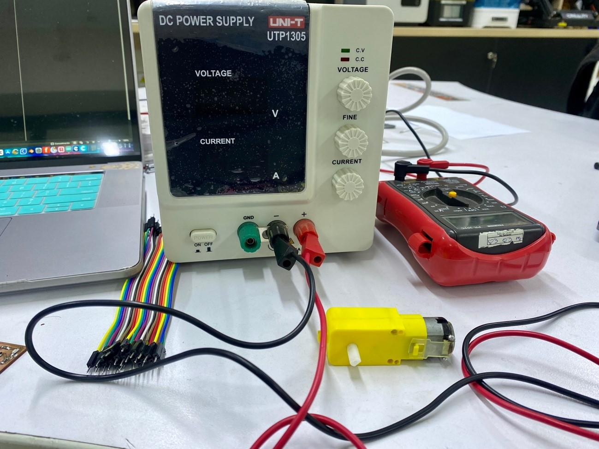
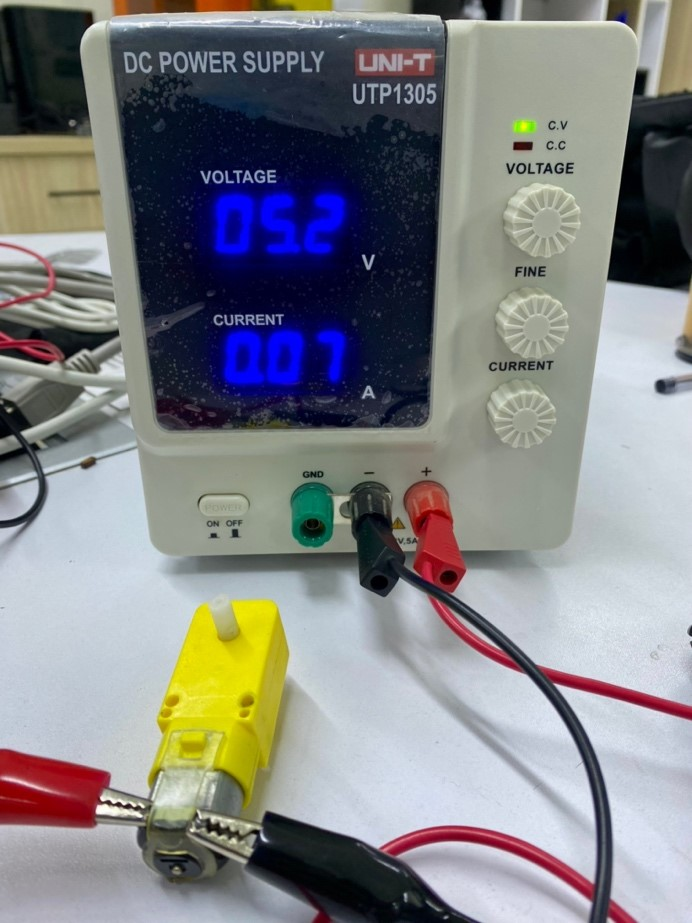
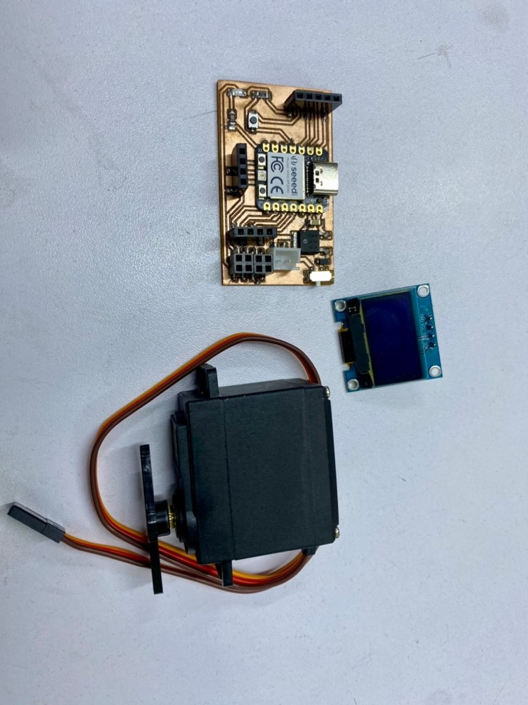
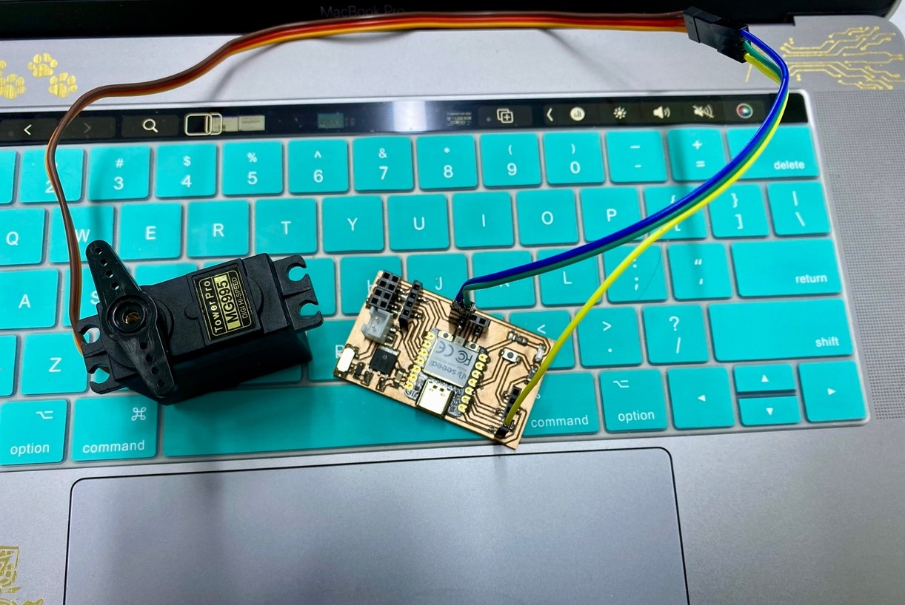
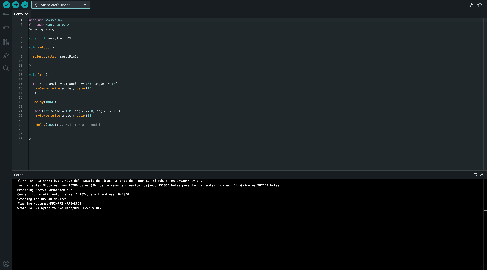
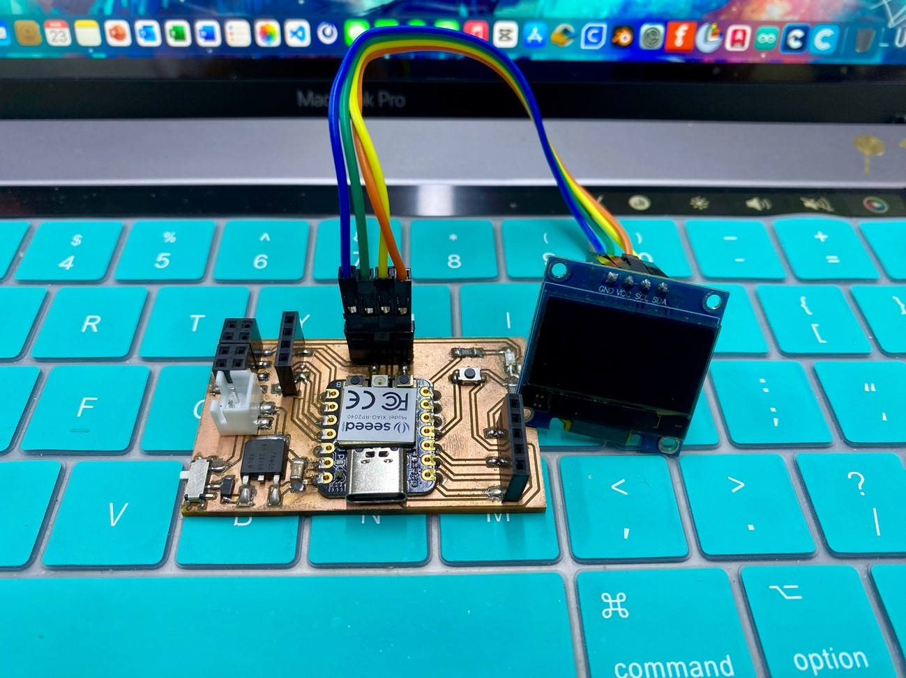
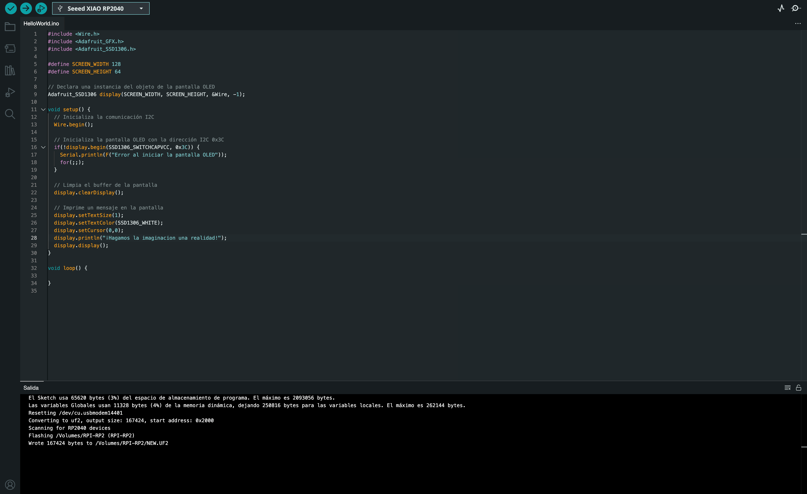

Welcome to Week 9
Output Devices
Hey! now we will learn about Output Devices.
Output devices are components that enable a system to interact with the external environment. Examples include engines, screens, LEDs, and more.
First of all, as a group work, we will use test equipment to measure the voltage and consumption of the electronic component that we will use for this part.
Power is determined by multiplying the voltage across a component by the current passing through it:
P = I * V
I used this formula to calculate the power flowing through a small DC electric motor, I connect the motor to a source, in the image we can see that the voltage is: 4.8 Volts, and the current is 0.02A.
In order to have a more exact measurement of how much voltage was reaching the motor, I placed my multimeter and it read a voltage of 5.24v.

Now let's do tests with free movement and placing resistance on the motor.
In the video, I = 0.07 is observed when the motor rotates freely and a maximum measurement of I = 0.16 when the motor shaft was prevented from moving.
Thus, we can calculate the power of the motor that consumes 5.24 x 0.07 = 0.37 watts in free movement and 0.83 watts with resistance of movement.
Ready! We learned about the power consumption of output devices……
It is time to experiment a little with these devices and the development board, for which we will do two experiments with the output devices that I will show you in the following image.
Let's hit it! first let's start with the servomotor….
We upload a programming so you can make progressive turnles.
Let's see how this program works…
Ok, now we continue with the OLED..
We upload a program so that it shows us a phrase on the OLED
Let's see how this program works…
Ready! That was all for today's assignment, see you next week with something crazy that comes to mind
See you next Week.